编号 XY20260801-r2 ｜ 小有天 AI 设计组 ｜ 提交：张小砚（最终使用者）+ 投资方
是：把三个形态方向落成看得见的画面和可核对的图，连同每一处取舍的理由，交你裁定。每个方案都按整体 → 中景 → 细节的顺序看；点击任意图片可放大。
不是：不是外立面定稿，不是施工依据。页内所有实景图都只是气质与概念验证——它们不证明结构、防水、排烟、造价与施工可行性（v2.1 §12.4）。面积与功能是否达标，只以《功能面积台账》和校核图为准，不以任何一张效果图为据。
同一方案里的整体、中景、细节，是各自独立生成的概念验证，不是同一栋建筑三维模型的多角度渲染。所以细看会发现门窗位置、柱子样式、屋脊走向在图与图之间对不上——这不是方案自相矛盾，是这一阶段工具的性质。每张图只回答自己那一个问题：整体图答"规模和格局成不成立"，中景答"这个场景是什么气氛"，细节答"这个节点长什么样"。到方案定案后，会以统一的三维模型出一套彼此严格一致的视图，那才是"一栋楼的多角度"。
三个方案好不好，不看谁更"高级"，看谁更接近你反复讲的那几件事。
| 尺 | 含义 |
|---|---|
| ① 动作在先 | 空间由劳作动线生成，不是先画形态再填功能 |
| ② 三边围合一个中庭 | 三条真实功能边直对同一交汇场，不是三角形轮廓（§7） |
| ③ 看得见叫得应 | 3 人站位视线交汇，无封闭盒子 |
| ④ 重物短线 | 1A→5→6→4→2→3 白酒闭环短、平、无门槛 |
| ⑤ 拔刀的距离 | 中庭由树／低墙／石块／水渠／台阶切出停留岛，不做一大片空场 |
| ⑥ 聚人檐 | 屋檐从"滴水"变"聚人"：檐下能坐一桌人，全程遮雨 |
一套连续深檐小青瓦屋面统摄三边，紧凑围合成一个院，低伏地贴着山谷走。屋面起伏只由功能产生——酿造边为排烟与跨度抬高，酒馆边压低到亲人尺度——不是为了效果图造波浪。
整体 ｜ 鸟瞰
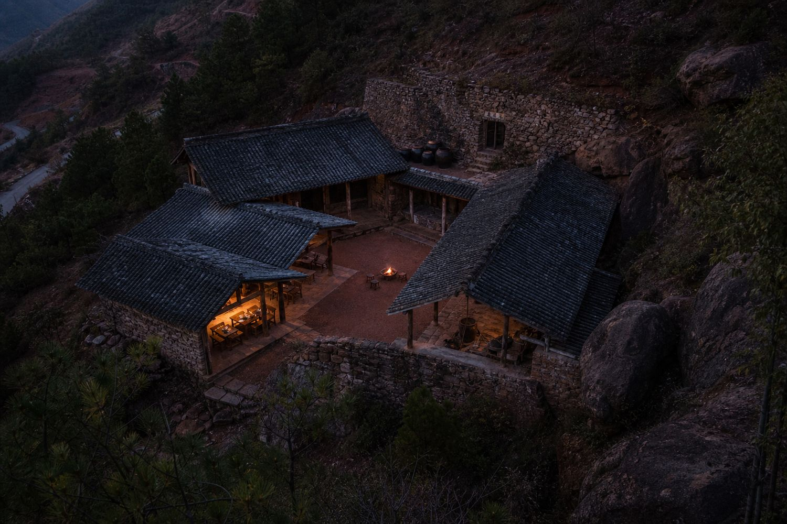
中景 ｜ 谷口与中庭
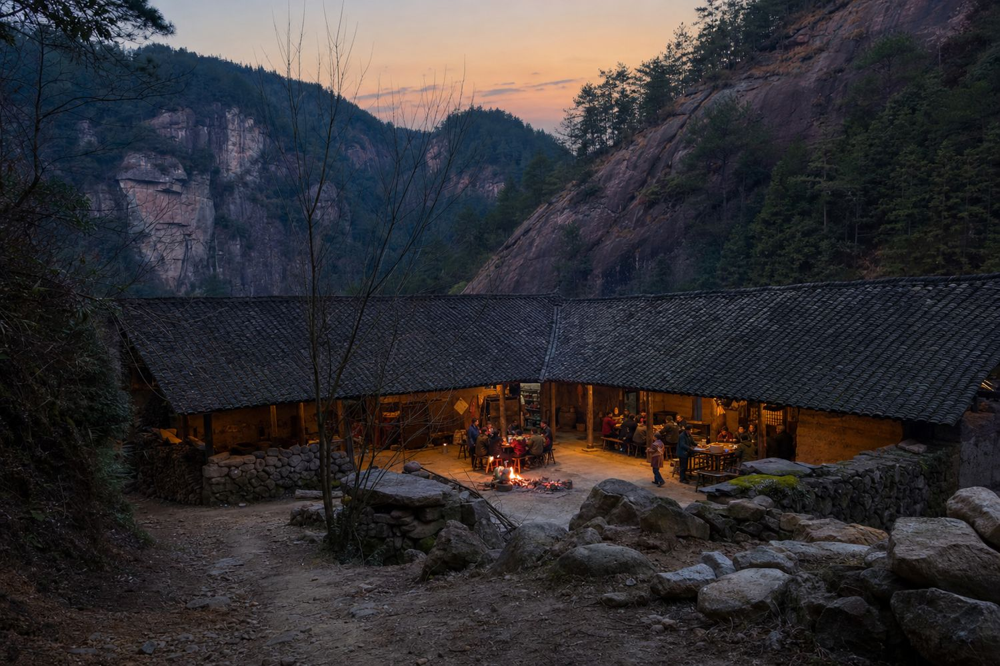
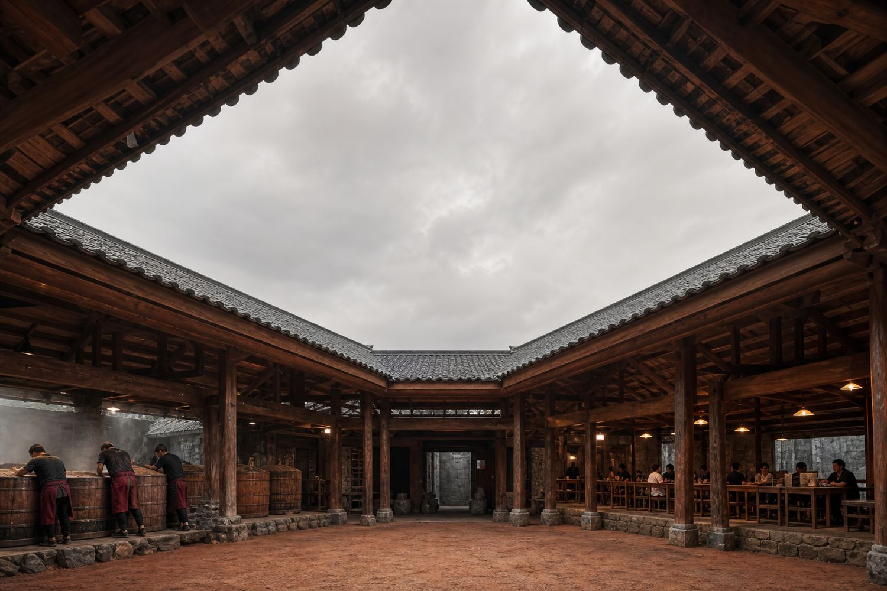
中景 ｜ 后勤卸货侧
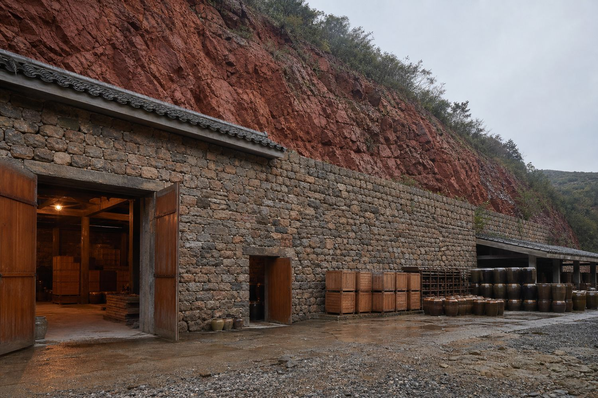
这张图的价值和好看无关：它证明这个方案有后勤。你曾指出货物包材若走酒坊内部、酒瓶拆托推小车，会平白增加破碎与人力——所以外部货运口不是装饰，是运营成本。它被安排在靠山一侧的厚毛石墙上，与 1A 粮仓、20 号陈酿贴邻，货进货出都不经过中庭和访客区。
细节 ｜ 檐下与夜态
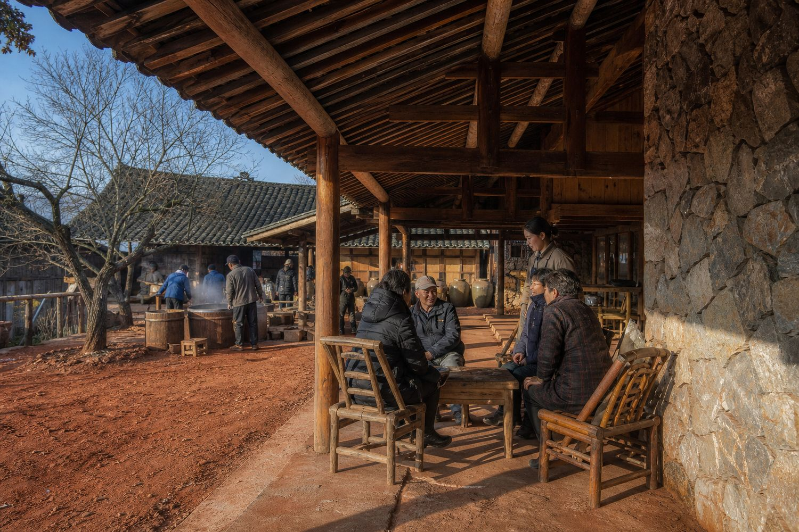
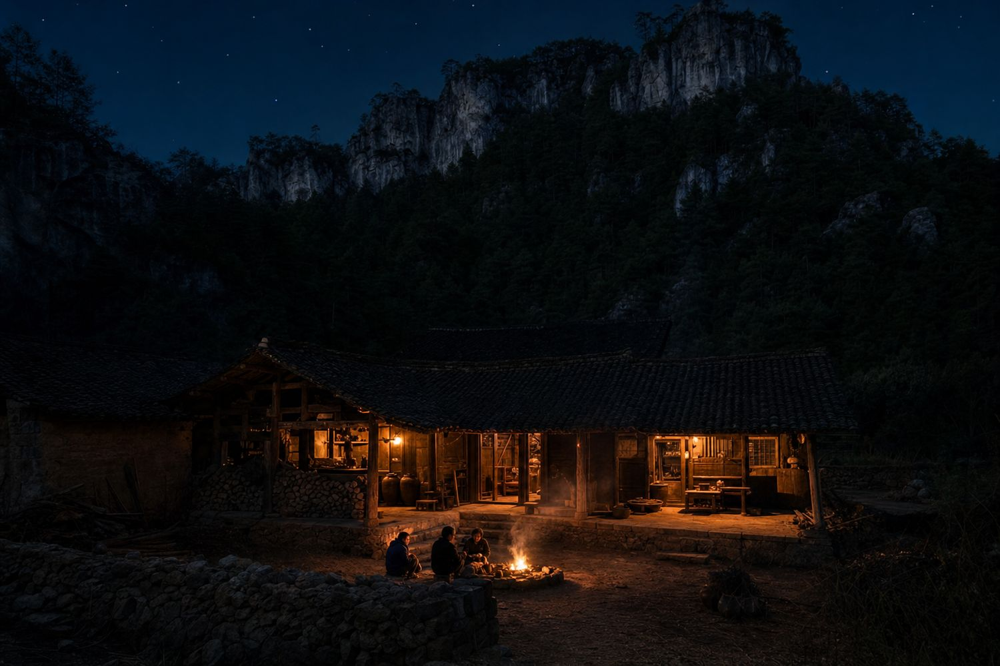
夜态几乎是任务书原文的图解。你写过"夜态只亮酒馆火灶，不做亮化"——这一条是气质的分水岭：亮化工程会立刻把一个酒坊变成景区。图里山谷是黑的，只有两处暖光，人在火边。这就对了。
屋顶选择「功能分段深檐」而非「均匀连续单坡」：酿造边脊高（排烟／跨度需要，假设 6.0m）、工坊边居中（约 5.2m）、酒馆边压低（假设 4.4m，檐口净高 2.4–2.8m）。每段高差都必须说得出理由，否则就是 §18 禁止的"无依据瓦浪"。
材料小青瓦＋毛石墙裙＋木／钢木。按你的标准"降一层新和净"，选会变老得好看的（长苔石、包浆木、褪色陶瓦），不选变旧难看的（亮漆、抛光、大面玻璃、白墙）。崖壁开挖的石料就地消化成墙体，石头的去向本身就是叙事。
靠山毛石做承重挡土厚墙而非饰面贴皮，兼顾恒温与边坡稳定；但日常高频生产不推入山体深处，白酒主发酵不进洞。
对"突破三角形"最克制、也最有场地依据的一种回答：打破的是三角形状，守住的是三条功能边围合一个中庭。航拍显示山谷本身就是三岔放射形，中央一块天然红土交汇场——所谓三角，本来就是山谷的几何。
两案共用同一套材料语言（小青瓦＋毛石＋木）是有意的：A 案的定义就是"不动你锁定的材料与屋面，只突破平面几何"。所以看单张中景、细节，两案确实分不出来——分辨它们要看鸟瞰：S1 是紧凑围合的一个院，A 案是顺山谷三条臂张开的放射。下面两张对照着看：
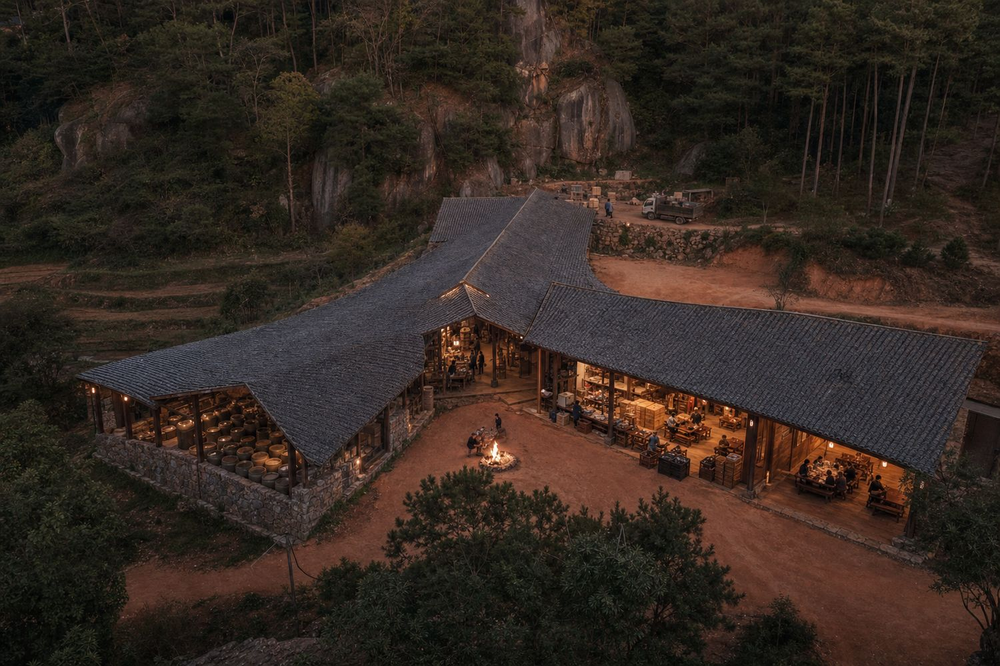
同一把尺看差别：S1 中庭更紧（⚠"拔刀的距离"偏挤），A 案中庭敞（✓），但 A 案臂长必须受重物动线约束。这一对图就是两案的全部分歧所在——其余材料、气质、构造全部相同。
整体 ｜ 鸟瞰
中景 ｜ 放射中庭
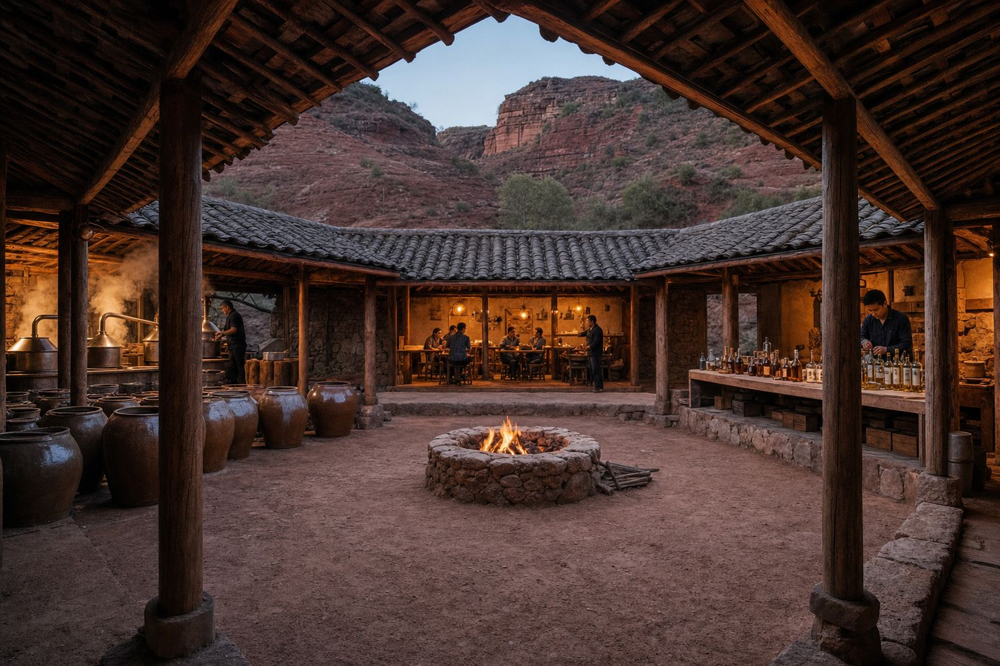
为什么放射比正三角好：正三角紧凑院的中庭净空只剩半径约 2.0–2.4m（局部 0.97m），出酒日 20–30 人根本站不下，热酒糟穿庭还要和生产交汇打架。三臂顺谷张开后，中庭变成敞口交汇场，净空显著放大——这正回应了你"拔刀的距离"和"人自然散开"。
细节 ｜ 关键节点
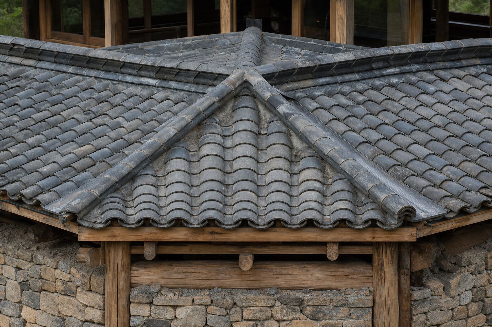
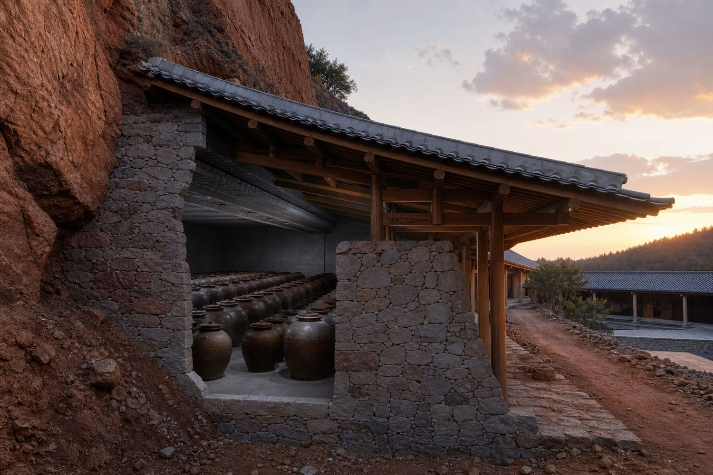
放射构型成不成立，全看左边这个交汇点。若三臂各自独立三坡、在中庭生硬拼接，屋面会出现"缝"，观感碎、排水乱；只有共用一套连续折面屋面、在交汇处以低垂连续脊收拢，才守得住 §12.1「一套连续屋面统摄」。这里也是漏水风险最高处，必须由建筑＋结构＋防水专项落实，不得为造型在交汇处起尖。
臂不能长：放射一旦拉长，重物动线随之变长，违「重物短线／G25」；而且三人退到臂根后，臂端生产就脱离看顾。所以 A 案的臂必须是短而张，不是长而散。臂长应由《3人看顾图》和动线图反过来约束。
逐臂差异化：三臂朝向不同，日照、雨飘、风向都不同，檐深必须逐臂定——朝南臂遮夏晒、朝北臂重保温、谷口臂聚人加深。这比正三角复杂，但也是它的机会：气候响应更精准。
§18 禁"放射伞群／放射玻璃／无依据曲面作整体主形"。A 案放射的是三条瓦屋面臂，不是伞、不是玻璃、不是曲面，且有山谷三岔地形这一硬依据。设计组倾向认为未越线，但这句话只能由你说。
( ) 视为未越线，A 案可推进 ( ) 视为越线，回退 S1 微展开三角
最激进的一条。以一个几何动作统摄全局——三翼折叠、中央挖出下沉火塘院——功能是折叠与挖洞的唯一理由。空间张力和"看得见叫得应"是三案里最强的；代价是它改写了你已锁定的主形与材料。
整体 ｜ 鸟瞰
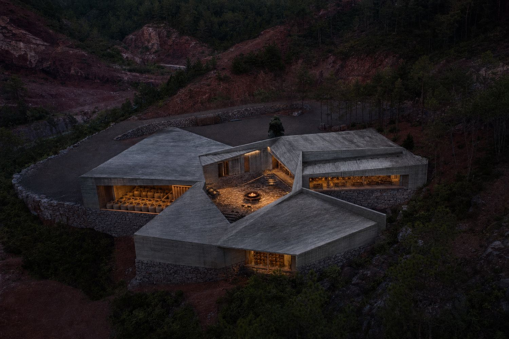
中景 ｜ 体量
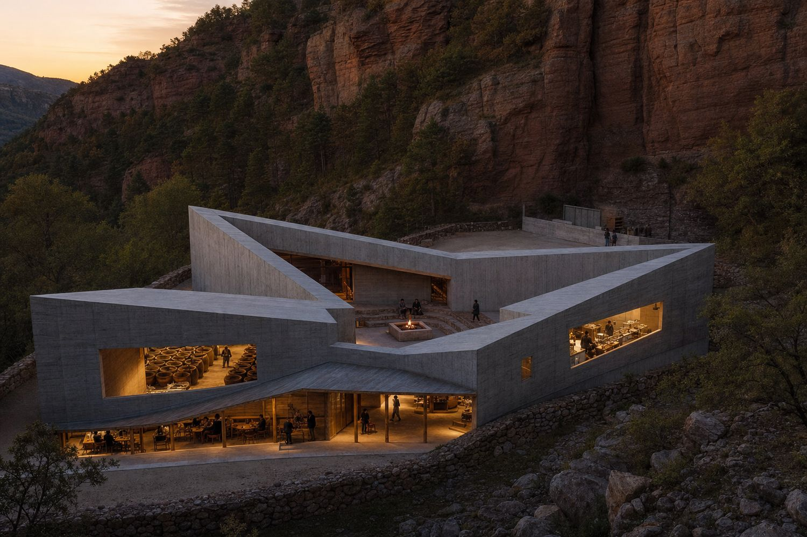
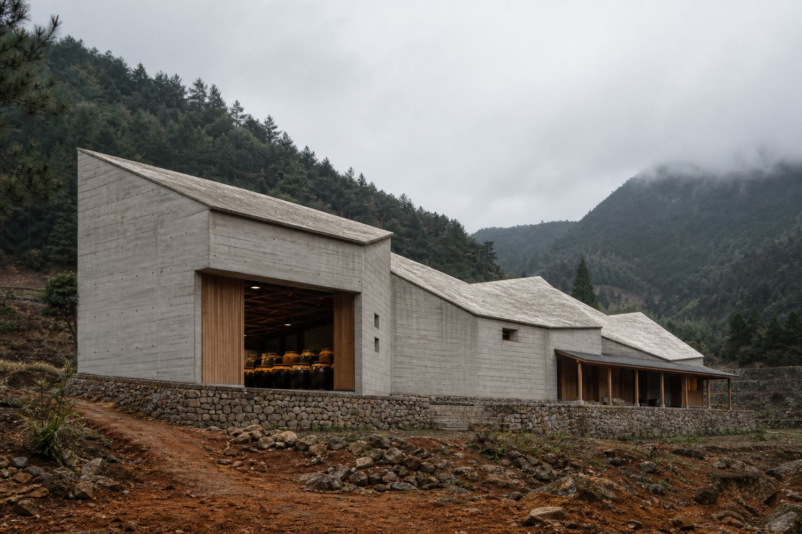
中景 ｜ 穿插与下沉院
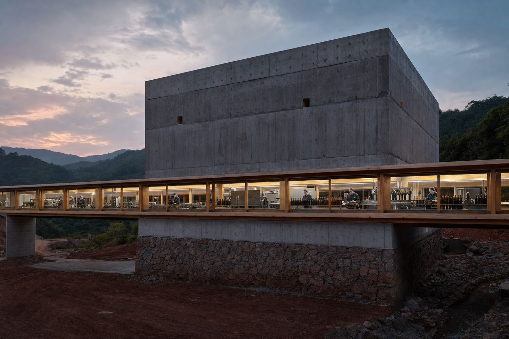
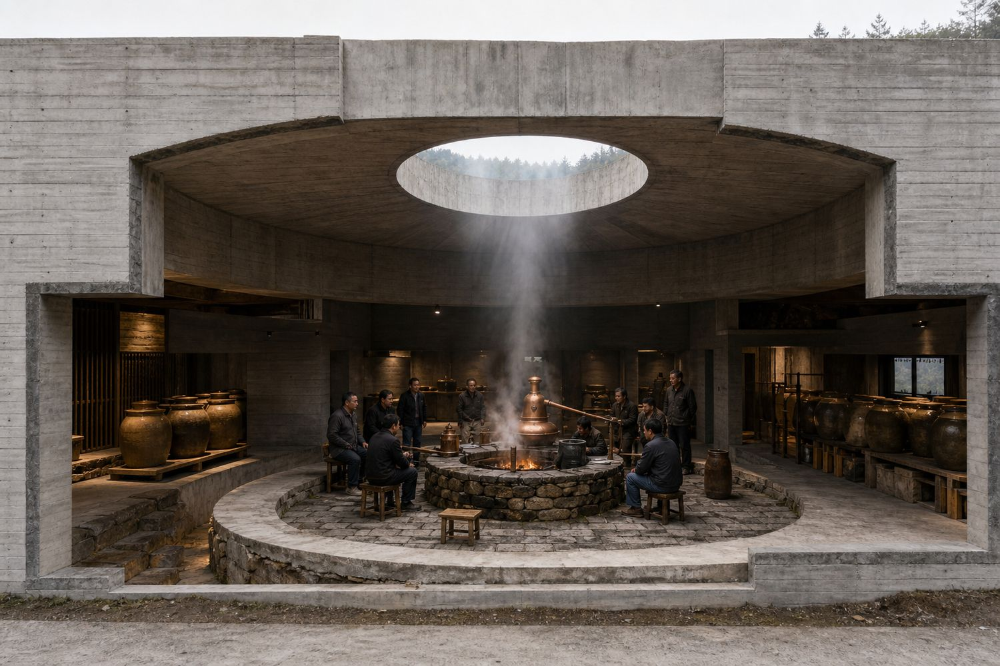
细节 ｜ 洞口与材料
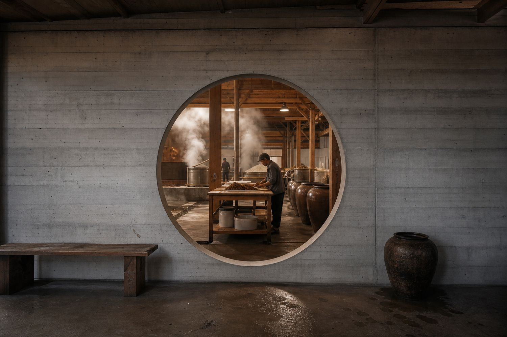
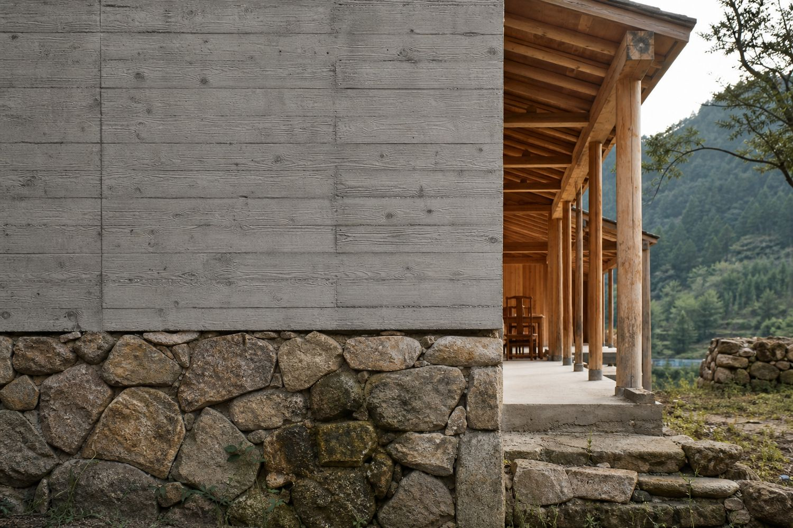
圆洞不是造型：它把"隔着一道墙也能看见对方在干活"直接做成了空间——这恰恰是你要的"看得见叫得应"，而且比开一扇普通窗更克制、更有力量。天窗同时解决三件事：冬至采光、夏季拔风、火塘排烟，并顺带把出酒变成一个有仪式感但不做作的场景。
形式方法参照首尔建筑师 Saul Kim（Saul Kim Studio）的白模研究：每一栋只做一个清晰的几何"异常操作"——收缩包裹、撕裂、架桥、压缩、分裂、剥落——靠体量而非材质说话。B 案借的是这套"功能＝单一几何操作"的克制，不是照抄某个形。落到这里，就是"三翼折叠＋中央挖院"作为唯一母题，洞口与穿插都是这个母题的从属动作。多操作叠加（又折又扭又剥）会立刻撞上 §18 的"无依据造型"，所以不做。
| 部位 | 必答项 |
|---|---|
| 挖出的洞口 | 洞口上方须梁／拱转换承重，不能凭空开大洞 |
| 穿插的生产条 | 木／玻璃与混凝土交接须变形缝＋防水（两种材料温胀不同） |
| 下沉院 | 挡土墙抗侧压、防涝与防水（下沉院最易积水）；明火在下沉院有聚烟风险 |
| 清水混凝土 | 平江冻融循环（−5.2～40.2℃）须定抗冻等级与防裂构造；渗漏与返修难度高 |
| 气候 | 混凝土体量天然少檐，而场地夏至暴晒 7–9.8h、年降水 1283mm，必须用折面出挑或木檐廊补足遮阳与排水 |
这些都是结构／给排水／暖通消防的专项必答项。设计组只提出接口与问题，不代签"可建"。
你在 0718 明确要求：先补《三角发酵院成立性校核图》，未过不深化。以下两张不花任何生成额度，是纯推导图。
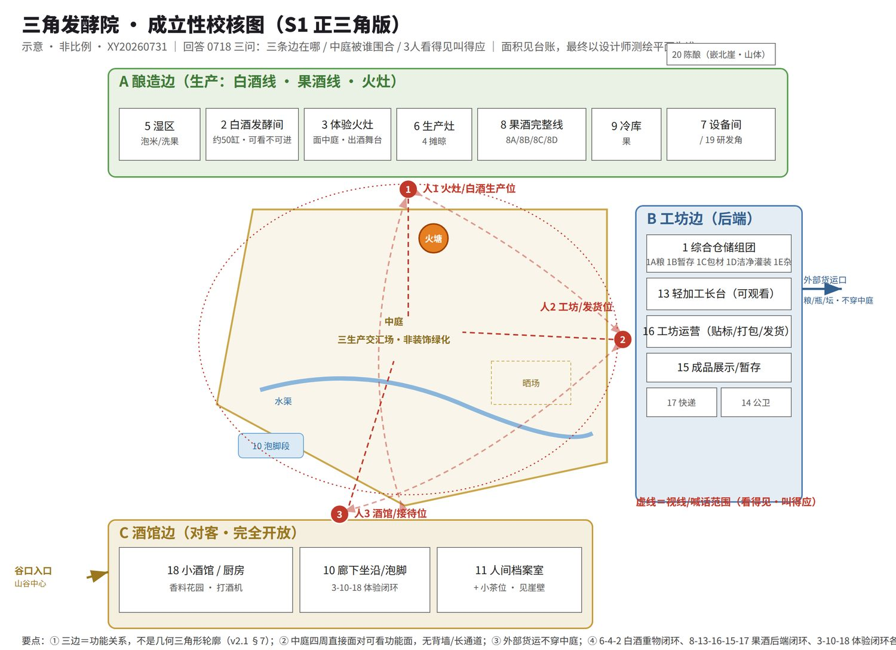
三条边分别是 A 酿造边（5 湿区、2 白酒发酵、3 体验火灶、6 生产灶、8 果酒线、9 冷库、7 设备）、B 工坊边（1 综合仓储组团、13 轻加工长台、16 工坊运营、15 成品、17 快递、14 公卫）、C 酒馆边（18 小酒馆厨房、10 廊下泡脚、11 人间档案室）。中庭四周直接面对的都是可看的功能面，没有背墙和长通道。
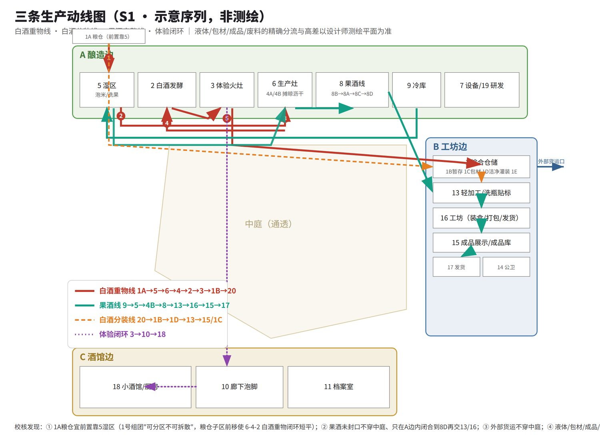
一、1A 粮仓宜前置靠 5 湿区。1 号仓储是"可分区不可拆散"的组团，但若粮仓子区留在工坊边远端，白酒的 1A→5→6→4→2→3 重物闭环就会被拉长。把粮仓子区前移贴湿区，闭环才短平——这正是你说的"每一批生产都要反复搬，不是偶尔搬一次"。
二、果酒未封口不得穿中庭。果酒线须在 A 边内闭合到 8D（洗瓶／消毒／装酒／压盖／瓶浴灭菌／冷却）后，才交给 13／16 贴标装盒。开放工坊只接封口灭菌后的瓶装酒，洁污边界不能含糊。
| 尺 ／ 锁定项 | 方案一 S1 | 突破三角 A | 突破三角 B |
|---|---|---|---|
| ① 动作在先 | ✓ | ✓ | ✓ |
| ② 三边围合一个中庭 | ✓ 紧凑闭合院 | ✓ 敞口交汇场 | ✓ 单体量内裂出院 |
| ③ 看得见叫得应 | ✓ | ✓ | ✓ 最强（洞口＋穿插） |
| ④ 重物短线 | ✓ | ⚠ 臂长须受动线约束 | ✓ |
| ⑤ 拔刀的距离 | ⚠ 中庭偏紧 | ✓ 敞口最松 | ✓ 下沉院有层次 |
| ⑥ 聚人檐 | ✓ 最自然 | ✓ | ⚠ 少檐，须折面出挑补 |
| §12.1 瓦屋面唯一主形 | ✓ | ✓ | ✗ 改写 → 需变更单 |
| §12.3 材料清单 | ✓ | ✓ | ⚠ 混凝土不在清单 |
| §18 禁放射／第二套主系统 | ✓ | ⚠ 须你认定 | ⚠ 须你认定 |
| §4.3 不大挖山 · 白酒不进洞 | ✓ | ✓ | ✓ 挖的是体量非山体 |
| 造价／施工风险 | 低 | 中（交汇节点） | 高（模板工艺／冻融／渗漏） |
以下是设计组作为专业建筑师的判断，供你参考，不替你决定。
理由不是保守，是风险配置。这个项目真正的难点从来不在造型，而在"一千多平米里只剩两百平好用面积"那件事——也就是平面效率与动线。S1 的瓦屋面语言已经被你锁定、也被本轮实景验证成立；把创新额度花在平面几何（三臂放射）而不是材料体系（换成混凝土）上，收益更高、风险更低。A 案不需要任何变更单，是三案里唯一"既突破了、又不用改文件"的路。
B 案整体推进的代价太大：改写主形、用清单外材料、当地清水混凝土工艺与冻融渗漏风险高、造价与维护都上一个台阶。但它贡献了两个可以移植到 S1／A 案里的好东西：
① 端墙上的观看洞口——不必是混凝土，毛石厚墙上开一个规整洞口同样成立，而且更贴在地材料。它比"开一扇窗"更能落实"看得见叫得应"，也天然满足 §7.2「可观看但摸不到」。
② 火塘上方的天窗拔风口——它一次解决采光、拔风、排烟三件事。瓦屋面上做一个收口天窗，工程难度远低于混凝土整体浇筑。
换句话说：把 B 案当作"动作库"而不是"方案"，这是投入产出比最高的用法。
本轮出图暴露了一个反复出现的倾向：模型总想在中庭中央放一片水池，或把中庭做成一整片开阔广场。这两者都违背你的原意——§7.3 禁中庭水景，而你自己说过"不要做成一大片空场，要通过树、低墙、石块、水渠、台阶把空间切碎，形成几个小的停留岛"。
这是本项目最容易被做坏的一处：中庭一旦被做成对称、居中、可拍照的广场，酒坊就变成了景区，而"人自然散开、有距离地待在一起"就没有了。建议在下一轮明确把中庭定义为非对称的、由构筑物切分的生产周转场，火塘偏心布置而不是居中。
不建议继续增加效果图。按 0718 的要求，应该是：《三角（或放射）发酵院成立性校核图》定稿 → 《功能面积台账》叠设备占位 → 三条动线图＋3人看顾图 → 关键剖面（含一张"聚人檐"聚合段剖面，标净深净高）→ 结构概念。这五项过了，形态自然就定了；这五项不过，再多效果图也定不了案。
另外《冬至/夏至日照斑块图》必须用真实坐标做日照模拟，不能用 AI 生成——檐深要落在真实的阳光斑块上，这件事图片模型答不了。
| 决策 | 选项 |
|---|---|
| 主形 | ( ) 只推 S1（不动文件） ( ) S1＋A 案并推（不需变更单） ( ) 签署变更单放行 B 案 |
| 放射是否越线 | ( ) 瓦屋面三臂放射未越 §18，可推进 ( ) 视为越线，回退 S1 微展开三角 |
| B 案动作移植 | ( ) 同意把观看洞口＋火塘天窗移植进 S1／A 案 ( ) 不移植 |
| 中庭性格 | ( ) 确认非对称、切分为停留岛、火塘偏心 ( ) 另有想法 |
| 下一步 | ( ) 进入五项校核（不再出效果图） ( ) 先再出几版形态 |